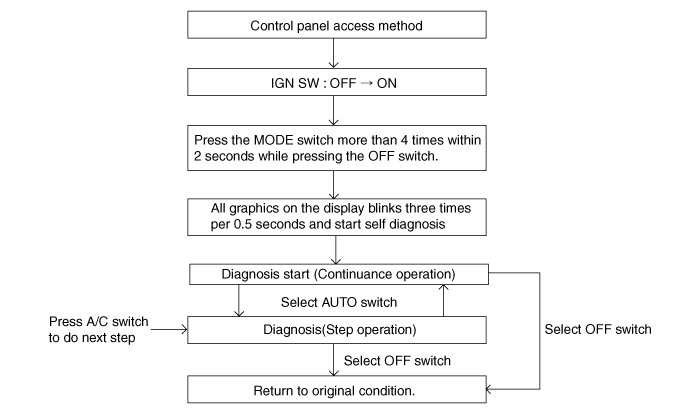
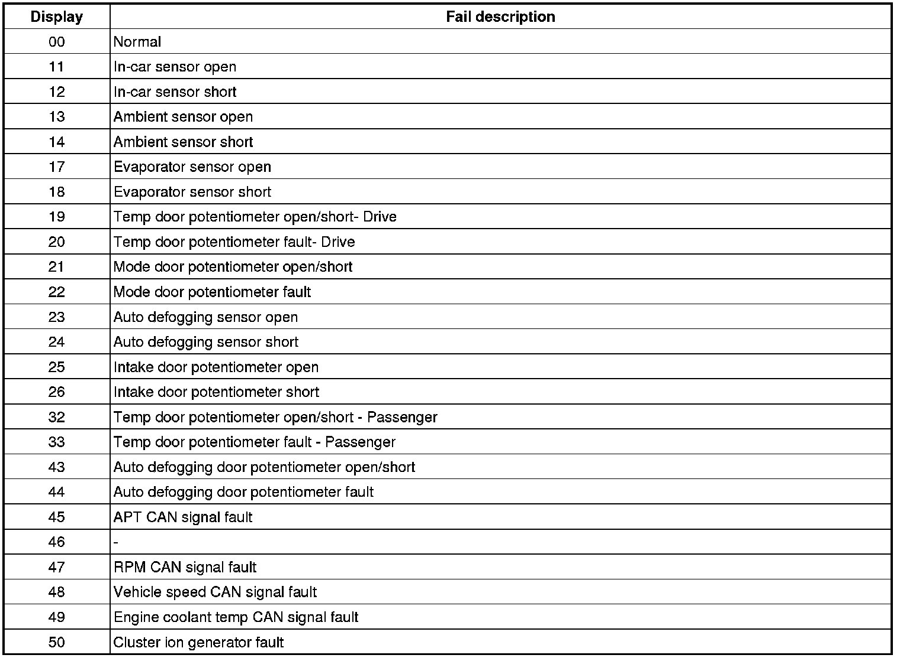
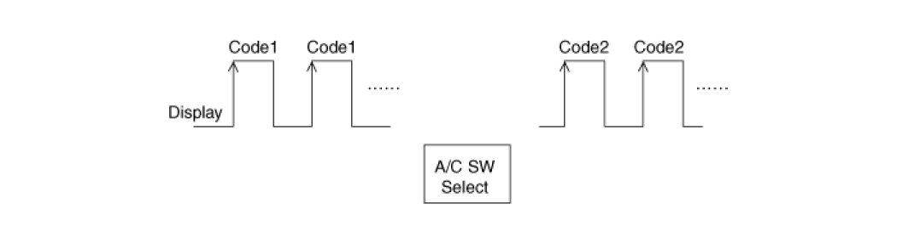
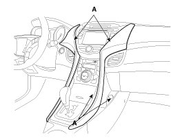
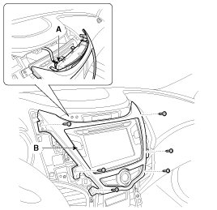
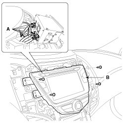
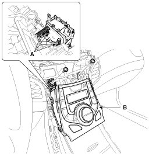

Repair Procedures
Self Diagnosis
1. Self-diagnosis process

2. How to read self-diagnostic code
After the display panel flickers three times every 0.5 second, the corresponding fault code flickers on the setup temperature display panel every 0.5 second and will show two figures. Codes are displayed in numerical format
Fault code

3. Fault code display
(1) Continuance operation : DTC code is one.
(2) Continuance operation : DTC code is more two.
(3) STEP operation
A. Normal or one fault code is same as a continuance operation.
B. DTC code os more two.

4. If fault codes are displayed during the check, Inspect malfunction causes by referring to fault codes.
5. Fail safe
(1) In-car temperature sensor: Control with the value of 23°C(73.4°F)
(2) Ambient temperature sensor: Control with the value of 20°C(67°F)
(3) Evaporator temperature sensor: Control with the value of -2°C(28.4°F)
(4) Water temperature sensor: Control with the value of 85°C(185°F)
(5) Temperature control actuator (Air mix potentiometer) :
If temperature setting 17°C-24.5°C, fix at maximum cooling position.
If temperature setting 25°C-32°C, fix at maximum heating position.
(6) Mode control actuator (Direction potentiometer) :
Fix vent position, while selecting vent mode.
Fix defrost position, while selecting all except vent mode.
(7) Intake control actuator :
Fix fresh position, while selecting fresh mode.
Fix recirculation position, while selecting recirculation mode.
(8) Auto defog sensor : Control with the value of 0%.
(9) Auto defogging actuator.
Fix vent Bi-lever mode position, while selecting close mode.
MODE except VENT Bi-Level: OPEN position.
Replacement
1. Disconnect the negative (-) battery terminal.
2. Using the screwdriver, remove the center garnish (A).

3. After leasing the mounting screws, disconnect the connector (A), and then remove the center fascia cover (B).

4. After leasing the mounting screws, disconnect the connector (A), and then remove the center audio assembly (B).

5. After leasing the mounting screws, disconnect the connector (A), and then remove the controller (B).

6. Installation is the reverse order of removal.